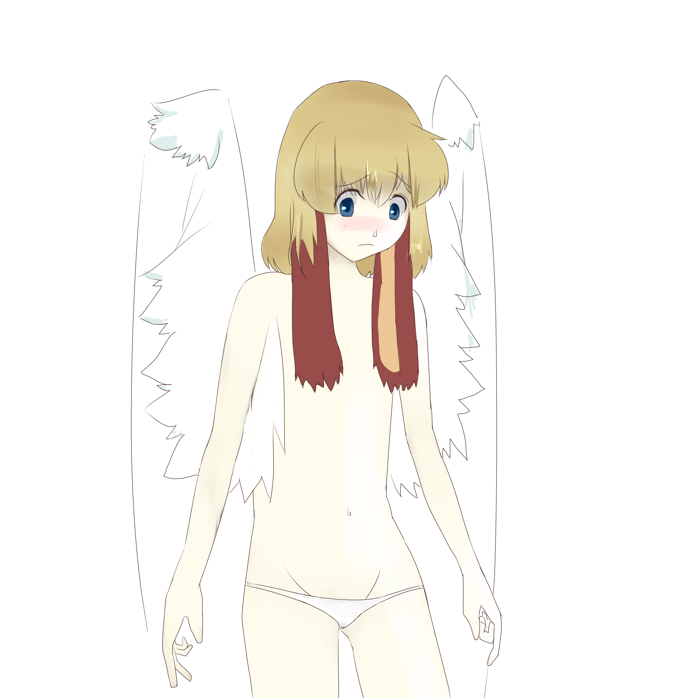

2014-01-21
¶
進捗ダメです．
絵を1枚描いた．

興味深い:
チュートリアル 2014/Jan/8 OS周りのセキュリティ対策
ROPgadget - Gadgets finder and auto-roper
ROPEME – ROP Exploit Made Easy
＾＾； :
USBメモリを「USB」と略す人間らは腹を切って死ぬべきである。また、USBメモリを「USB」と略す人間らはただ死んで終わるものではない。彼らは無責任な悪人であり、中３女子が地獄の火の中に投げ込む者達である。
メモ:
換喩
提喩
読みたい！！！！！！:
記号と再帰: 記号論の形式・プログラムの必然